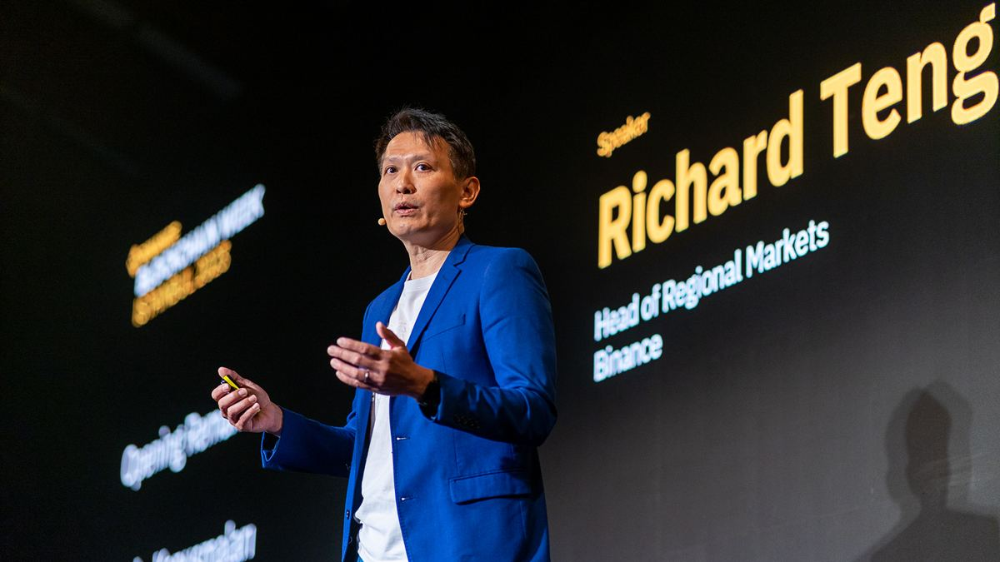

Binance dibobol ±US$6,3 miliar: hack crypto terbesar sepanjang sejarah?Binance hacked for ±US$6.3 billion: the biggest crypto hack in history?
Menurut TRM Labs, Binance jadi korban serangan senilai sekitar US$6,3 miliar di 10 blockchain, sebagian besar dana tersedot dalam ±20 menit.According to TRM Labs, Binance was hit by an attack worth about US$6.3 billion across 10 blockchains, with most of the funds drained in ±20 minutes.

Poin utamaKey points
- Menurut TRM Labs, sekitar US$6,36 miliar keluar dari wallet Binance di 10 blockchain; sebagian besar dalam ±20 menit mulai 20.05 UTC, 29 Oktober 2026 (04.05 WITA, 30 Oktober).
- Angkanya sekitar 4x lebih besar dari hack Bybit (±US$1,5 miliar, Februari 2025).
- Pernyataan awal Binance (30 Okt): laptop seorang DevOps engineer diduga disusupi dan dipakai mengakses service container untuk mengirim penarikan tak sah; tidak ada bukti private key wallet bocor.
- TRM Labs dan Chainalysis (keyakinan tinggi) menunjuk grup TraderTraitor asal Korea Utara; FBI menyatakan hal yang sama pada 31 Oktober 2026.
- Binance menyebut ±US$3 miliar dibekukan on-chain (30 Okt); hitungan TRM hampir US$2,7 miliar, dengan ±US$2,4 miliar masih dipegang pelaku.
- According to TRM Labs, about US$6.36 billion left Binance wallets across 10 blockchains, most of it in ±20 minutes starting at 20:05 UTC on 29 October 2026 (04:05 WITA, 30 October).
- That is about 4x the Bybit hack (±US$1.5 billion, February 2025).
- Binance's initial statement (30 Oct): a DevOps engineer's laptop was likely compromised and used to access a service container to submit unauthorized withdrawals; there is no evidence that wallet private keys leaked.
- TRM Labs and Chainalysis (high confidence) point to TraderTraitor, a North Korean group; the FBI said the same on 31 October 2026.
- Binance said ±US$3 billion was frozen on-chain (30 Oct); TRM's count is nearly US$2.7 billion, with ±US$2.4 billion still held by the attacker.
Menurut TRM Labs, sekitar US$6,36 miliar keluar dari wallet Binance di 10 blockchain pada 29 Oktober 2026. Sebagian besar dana disedot dalam ±20 menit, mulai pukul 20.05 UTC (04.05 WITA, 30 Oktober). Ini pencurian crypto terbesar yang pernah tercatat, sekitar 4x hack Bybit (±US$1,5 miliar, Februari 2025).
Bagaimana bisa terjadi? Dalam pembaruan 30 Oktober, Binance menyatakan investigasi awal mengarah ke laptop seorang DevOps engineer yang disusupi, lalu dipakai untuk mengakses service container dan mengirim transaksi penarikan tak sah. Binance bilang tidak ada bukti private key wallet bocor. Post-mortem Binance berikutnya (3 November) menyebut kampanye ini dimulai sejak Juni lewat installer palsu dan tawaran wawancara kerja palsu.
Siapa pelakunya? TRM Labs dan Chainalysis menunjuk grup TraderTraitor asal Korea Utara dengan tingkat keyakinan tinggi, grup yang sama di balik hack Bybit. Pada 31 Oktober 2026, FBI juga menyatakan peretas Korea Utara berada di balik pencurian ini.
Soal dana yang dibekukan: Binance menyebut ±US$3 miliar sudah dibekukan on-chain per 30 Oktober. Hitungan TRM hampir US$2,7 miliar (antara lain Tether ±1,77 miliar USDT dan Circle ±825 juta USDC), sementara ±US$2,4 miliar masih dipegang pelaku.
Dampaknya: Binance berjanji mengganti semua kerugian lewat dana SAFU dan dana perusahaan, dan menyatakan dana pengguna aman; penarikan sempat dihentikan sementara. Di pasar, BTC turun sekitar 4% dan sempat di bawah US$78.000 pada 30 Oktober.
According to TRM Labs, about US$6.36 billion left Binance wallets across 10 blockchains on 29 October 2026. Most of the funds were drained in ±20 minutes, starting at 20:05 UTC (04:05 WITA, 30 October). It is the largest crypto theft on record, about 4x the Bybit hack (±US$1.5 billion, February 2025).
How did it happen? In its 30 October update, Binance said its initial investigation pointed to a compromised DevOps engineer's laptop, which was used to access a service container and submit unauthorized withdrawal transactions. Binance said there is no evidence that wallet private keys leaked. Binance's later post-mortem (3 November) said the campaign began in June through a fake installer and fake job interviews.
Who is behind it? TRM Labs and Chainalysis point with high confidence to TraderTraitor, a North Korean group, the same group behind the Bybit hack. On 31 October 2026, the FBI also said North Korean hackers were behind the theft.
Frozen funds: Binance said ±US$3 billion had been frozen on-chain as of 30 October. TRM counts nearly US$2.7 billion (including ±1.77 billion USDT by Tether and ±825 million USDC by Circle), while ±US$2.4 billion is still held by the attacker.
The impact: Binance promised to cover all losses through its SAFU fund and company funds, and said user funds are safe; withdrawals were temporarily suspended. In the market, BTC fell about 4% and briefly traded below US$78,000 on 30 October.
Kenapa pentingWhy it matters
Binance berjanji mengganti semua kerugian dan menyatakan dana pengguna aman, tetapi kasus ini kembali membuka pertanyaan soal risiko menyimpan crypto di exchange.Binance promised to cover all losses and said user funds are safe, but the case again raises questions about the risk of keeping crypto on an exchange.
Tips aman dari caption COIN BROSafety tips from the COIN BRO caption
- Pakai hardware key (bukan 2FA via SMS).
- Aktifkan withdrawal whitelist.
- Pakai alias email unik.
- Cek sesi login secara rutin.
- Use a hardware security key (not SMS 2FA).
- Turn on the withdrawal whitelist.
- Use a unique email alias.
- Check your login sessions regularly.
FotoPhotos
Foto: Richard Teng di Binance Blockchain Week 2023, Istanbul (Binance, CC BY 4.0); kaus dan tas Binance (Bretwa, CC BY-SA 4.0). Via Wikimedia Commons. Foto ilustrasi, bukan foto kejadian.Photos: Richard Teng at Binance Blockchain Week 2023, Istanbul (Binance, CC BY 4.0); Binance t-shirt and bag (Bretwa, CC BY-SA 4.0). Via Wikimedia Commons. Illustrative photos, not of the incident.
SumberSources
- Binance: Security Incident Update (30 Okt 2026)
- TRM Labs
- AP News: FBI says North Korean hackers behind Binance heist
- Decrypt
- BBC
- CNBC: Bitcoin holds up after Binance hack
Tonton versi singkatWatch the short version
Ikuti COIN BRO diFollow COIN BRO on Telegram
Dapatkan berita seperti ini lebih cepat di channel kami. Gratis.Get news like this faster on our channel. Free.
Bukan saran finansial. Artikel ini adalah informasi dan edukasi, bukan ajakan membeli atau menjual aset apa pun. Aset kripto berisiko tinggi. Fakta mengikuti sumber yang tercantum; bagian berlabel interpretasi adalah pendapat, bukan fakta. Menemukan kesalahan? Lihat kebijakan koreksi.Not financial advice. This article is information and education, not a solicitation to buy or sell any asset. Crypto assets are high risk. Facts follow the listed sources; sections labeled interpretation are opinion, not fact. Found an error? See our corrections policy.